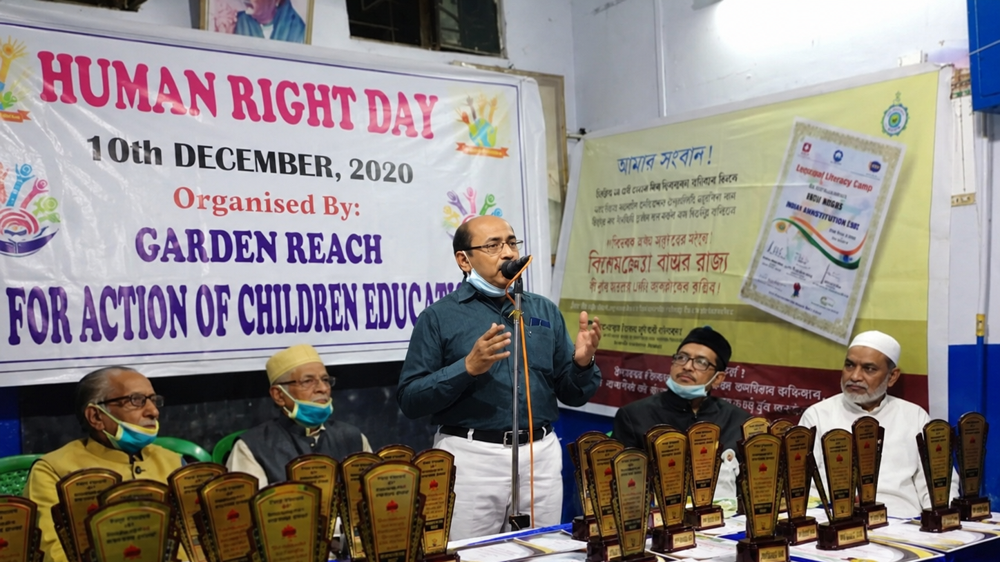

Law students
Helping students understand legal principles in a practical context and encouraging deeper engagement with advocacy, procedure, legal reasoning and professional ethics.
For Advocate Md. Kalam, legal education is not confined to textbooks or classrooms. It is a continuing responsibility to guide law students, mentor young graduates entering the profession and make knowledge of the law accessible to society at large.

Years of legal practice become more valuable when experience is shared with students, young lawyers and citizens.
Advocate Md. Kalam provides legal education and practical guidance to law students, helping them connect academic study with the realities of advocacy, courts, procedure and professional responsibility.
His educational role also extends to LL.B. graduates through internship opportunities in his legal practice. These internships are intended to give emerging legal professionals exposure to practical legal work, professional discipline, case preparation and the everyday responsibilities of an advocate.
Helping students understand legal principles in a practical context and encouraging deeper engagement with advocacy, procedure, legal reasoning and professional ethics.
Providing internship and practical learning opportunities to LL.B. graduates and aspiring advocates so they can observe and learn from real legal practice.
Taking legal awareness beyond the profession by helping citizens understand basic rights, constitutional values and important areas of Indian law.
Legal literacy can help citizens recognise their rights, understand their responsibilities and approach institutions with greater confidence. Through public discussions, seminars and community interaction, Md. Kalam seeks to make foundational legal knowledge more approachable.
Awareness of dignity, equality, liberty and the protections that belong to every person.
Understanding constitutional values, fundamental rights, duties and the framework of democratic governance.
Introducing citizens and learners to essential concepts of offences, criminal procedure, rights and legal safeguards.
Building awareness of civil rights, remedies, disputes and the legal processes that affect everyday life.
On the occasion of Human Rights Day, Advocate Md. Kalam engages with aspiring legal professionals as well as members of society to promote awareness of human rights, dignity, equality and justice.
Through mentorship and public interaction, he encourages young legal minds to understand their wider responsibility to society while helping citizens become more aware of the rights and protections available to every individual.
Legal education becomes most powerful when knowledge from books, courts and lived experience is shared with others.
As an advocate and educator, Md. Kalam's aim is to help develop informed law students and young professionals while also strengthening legal awareness among ordinary citizens. Education, mentorship and public legal literacy form a natural extension of his professional life.